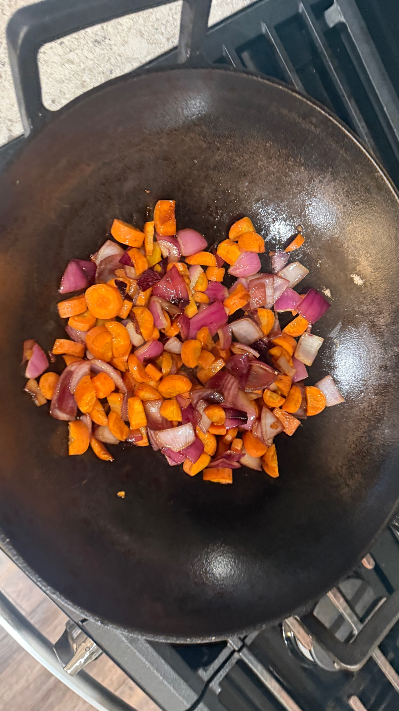
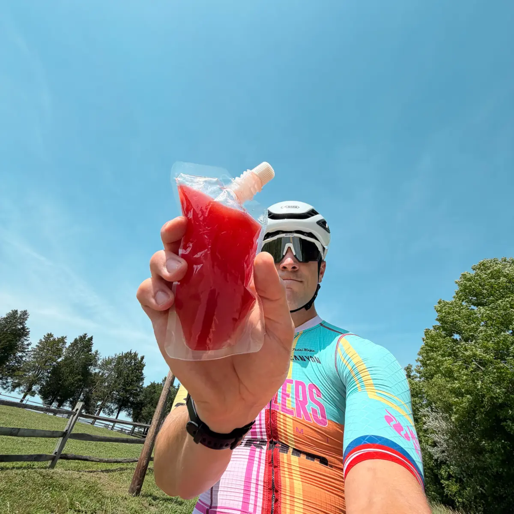
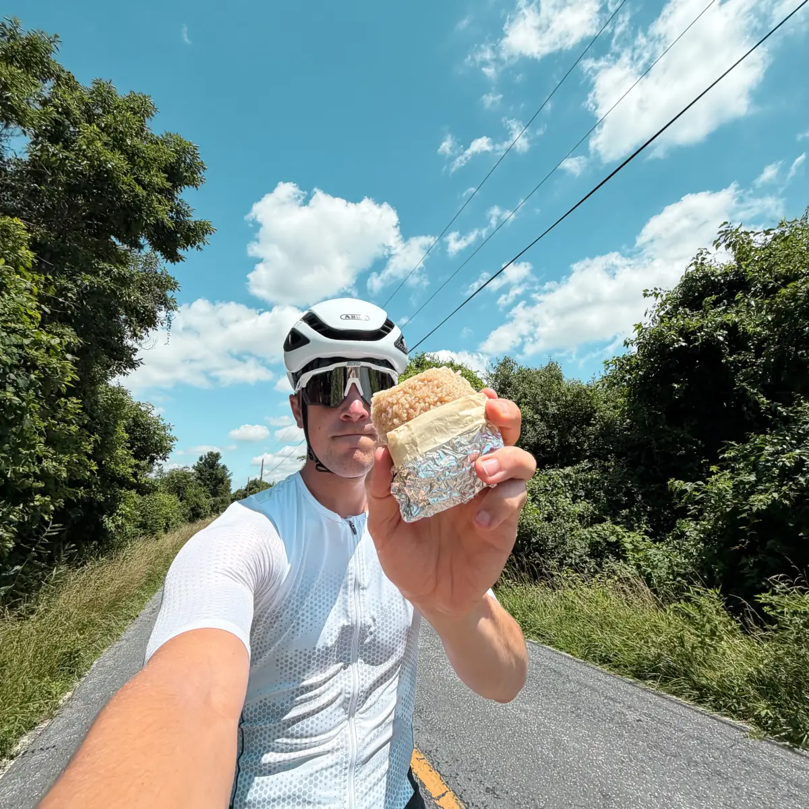

Papito's Food Romance
Home recipes of things I love — savory, dinner, breakfast, desserts. Picture left, text right, read more opens the full recipe.
Open Papito's Food Romance →

Winter Bars
Low-carb, high-protein bars — no-bake favorites and coconut additions, each with its source on the card.
Open the book →

Cycling Food
All 22 Drew Addis ride recipes as web pages — the gels, plus the on-bike food: rice cakes, bars, bites, and ride drinks.
Open Cycling Food →

Endurance Fuel
The Drew Addis ride-fuel recipes, organized as a gift book — gels, bars, and long-ride food.
Open the PDF →